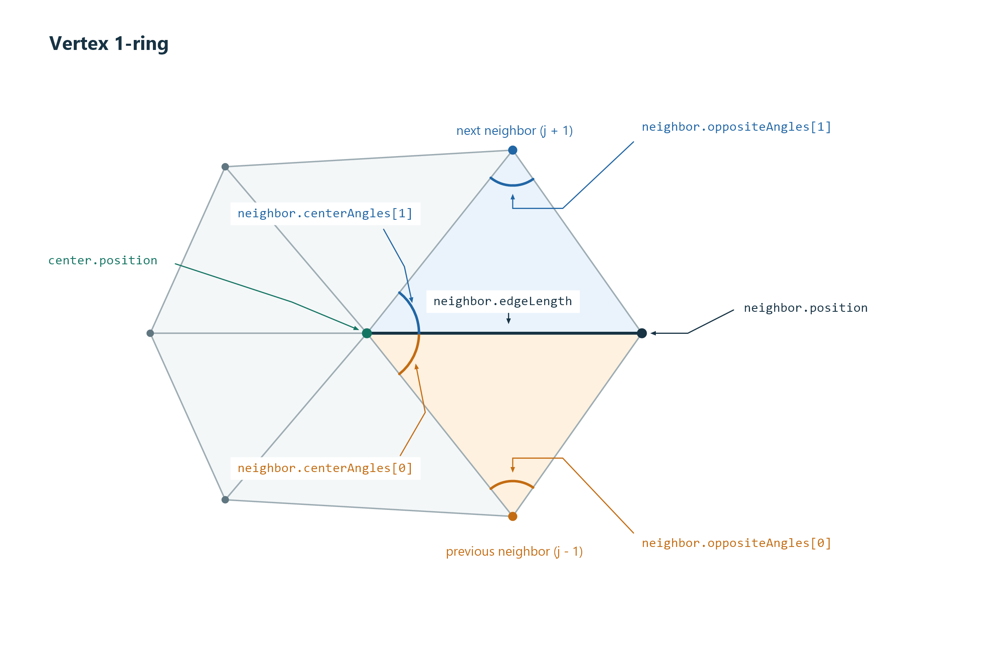

Open full-size diagram
computeWeights(ring)
The solver calls this synchronous JavaScript function once per interior vertex. Return one unnormalized weight per neighbor, in the same order as ring.neighbors.
function computeWeights(ring) {
return ring.neighbors.map(neighbor =>
1 / neighbor.edgeLength
);
}
This example reproduces Inverse Distance weights. Positions use original model units; angles are unsigned and measured in radians in each 3D triangle.
The ring object
ring.center{ id, position }. The current center's zero-based vertex ID and [x, y, z] position.ring.isBoundary- A boolean indicating an open boundary fan. Boundary vertices can be inspected in Input ring data, but the solver fixes their UVs and does not evaluate their weights.
ring.neighbors- Neighbors in oriented face-fan order, not sorted by ID or distance. An interior ring wraps around; a boundary fan is open.
ring.faces- The incident triangles, described below. Associate them with neighbors by face ID; their array order need not match neighbor order.
Each neighbor
For neighbor = ring.neighbors[k], side [0] is the previous face and side [1] is the next face in fan order.
neighbor.id- The neighbor's zero-based vertex ID.
neighbor.position- The neighbor's original
[x, y, z] position.
neighbor.edgeLength- The Euclidean distance between
center.position and neighbor.position.
neighbor.centerAngles[previous, next]: angles at the center, between the selected edge and the edge to the previous or next neighbor. Mean Value weights use these angles.neighbor.oppositeAngles[previous, next]: angles opposite the selected edge, located at the previous and next neighbors, not at the selected neighbor. Cotangent weights use these angles.neighbor.oppositeVertexIds- IDs of those previous and next vertices, in the same two-side order.
neighbor.incidentFaceIds- IDs of the previous and next triangles sharing the selected edge.
On an open boundary fan, a missing side is null in each angle/ID pair. The illustration is planar; the same definitions apply locally to curved meshes.
Each incident face
face.id- The zero-based triangle ID, after any OBJ triangulation.
face.vertexIds- The triangle's three vertex IDs in face-winding order.
face.positions- Three
[x, y, z] positions in that same order.
face.area- Triangle area in squared model units.
face.normal- A unit
[nx, ny, nz] normal oriented by the face winding.
Return rules
- Return an ordinary array with exactly
ring.neighbors.length entries. Entry k weights ring.neighbors[k].
- Each entry must be a finite number. Negative and zero weights are allowed;
NaN, infinities, Promises, and typed arrays are rejected.
- The row cannot be all zero or have a numerically canceling sum. You do not need to normalize the weights; the solver handles this.
- Inputs are copied and read-only. Do not modify the ring, its objects, or its arrays.
The interior equation is UV_i = sum(w_ij * UV_j) / sum(w_ij).
Weights do not have to be symmetric across an edge.
Evaluation and updates
The function runs in isolation without DOM or network access.
Click Apply to evaluate your custom function. Moving a vertex reevaluates the function; changing only Boundary or Spacing reuses its evaluated weights.
If evaluation or solving fails, the last valid UV solution is kept.
Input ring data shows the values for the selected vertex. Applied weights shows raw and normalized weights used in the displayed solution.